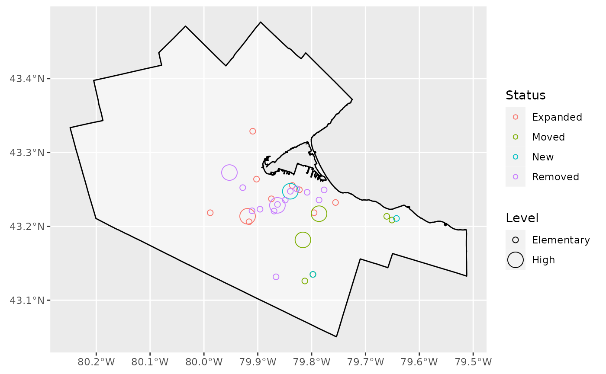
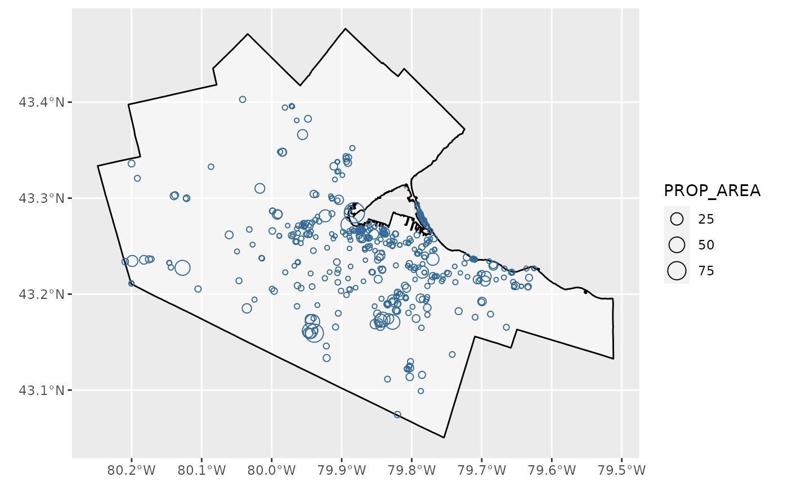

HamONdest-vignette.RmdThe goal of HamONdest is to compile all potential destinations (Schools, municipally-owned land, health care and residential care facilities, etc.) and their estimated ‘supplies’ in Hamilton, Ontario, Canada all in one data-package to facilitate the calculation of accessibility and mobility measures in the transportation planning context. The majority of data is sourced from Hamilton’s Open Data Portal and is augmented with additional open data from higher levels of government (provincial and federal), predicted values, and/or data from OpenStreetMap.
The intention of this package is to collect up-to-date location and additional details about potential destinations/opportunities worth travelling to within the Hamilton Census Metro Area (CMA). All objects contained within this package are in the same coordinate system, carry similar field names, and will conveniently carry ‘supply’ values (i.e., capacity of the service/facility/opportunity) to facilitate accessibility calculations.
The HamONdest package is still a work in progress and is freely available here.
This vignette visualizes the data contained within this package and the type of analysis which can be conducted using the data.
The following plot shows the change in Elementary and Secondary Public and Public Catholic Schools between 2011 and 2016. sum(count(Schools_201516_201011 %>% filter(Status == "Expanded") %>% st_drop_geometry() %>% select(Status))) expanded, sum(count(Schools_201516_201011 %>% filter(Status == "Moved") %>% st_drop_geometry() %>% select(Status))) moved addresses, sum(count(Schools_201516_201011 %>% filter(Status == "New") %>% st_drop_geometry() %>% select(Status))) were newly opened, and sum(count(Schools_201516_201011 %>% filter(Status == "Removed") %>% st_drop_geometry() %>% select(Status))) were removed.
ggplot() +
geom_sf(data = Ham_CityBound,
size = 0.5,
alpha = 0.5,
color = "black",
fill = "white")+
geom_sf(data = Schools_201516_201011 %>% filter(Status != "NoChange"),
aes(col = Status, size = Level),
shape = 1) ## old-style crs object detected; please recreate object with a recent sf::st_crs()
## old-style crs object detected; please recreate object with a recent sf::st_crs() This spatial visualization demonstrates that the majority of schools that were closed are elementary, and those elementary schools are located within Downtown (Center) Hamilton.
However… is this a disproportionately high number of schools which closed? How do school closures align with student population within the area? Future analysis will investigate.
The next visualization demonstrates the “Underdeveloped Outdoor” within the City-Owned Property dataset. The visualization scales each “Underdeveloped Outdoor” by the property areas; where larger circles represent larger property areas and smaller circles represent smaller property areas (in units of Acres).
ggplot() +
geom_sf(data = Ham_CityBound,
size = 0.5,
alpha = 0.5,
color = "black",
fill = "white")+
geom_sf(data = City_Owned_Property %>% filter(CATEGORY_TYPE == "Underdeveloped Outdoor"),
aes(size = PROP_AREA, col = 1),
shape = 1) +
guides(col = F)## old-style crs object detected; please recreate object with a recent sf::st_crs()
## old-style crs object detected; please recreate object with a recent sf::st_crs() This visualization demonstrates that this property which is namely cemeteries with no infrastructure, flat land with mowed grass, and proposed park space appears to be concentrated in density of locations are within Hamilton Center. However, Properties with large area are seem to be located outside of Hamilton Center.
Further analysis to follow.